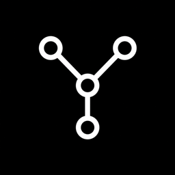

OpenYokeLocal-first AI harness for open source models.
Keys are saved locally and sent only to the provider.
OpenYoke stores your conversations and settings in a folder you choose, so they survive restarts. Enter an absolute folder path to continue.